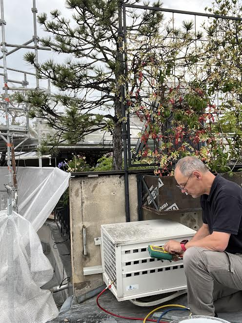

ET SI CHEZ VOUS,
L'ÉTÉ DEVENAIT
enfin agréable ?
Une fraîcheur parfaite. Un confort silencieux.Climatisation réversible en Essonne et alentours.
L’EXPÉRIENCE DERRIÈRE PRISE 2 FROID
30 ANS D’EXPÉRIENCE PROFESSIONNELLE

UNE ENTREPRISE AVEC
UNE EXPÉRIENCE SOLIDE.
Prise 2 Froid est portée par plus de 30 ans d’expérience professionnelle de son fondateur.
Du bâtiment aux environnements exigeants et haut de gamme, une même ligne de conduite : écouter, conseiller, travailler proprement et soigner chaque détail.
Vous avez un interlocuteur unique, présent du conseil jusqu’à l’installation.
30 ANSd’expérience professionnelle
LOCALArtisan en Essonne
UN SEULinterlocuteur
SOIGNÉChaque détail compte
PRISE 2 FROID - LE CONFORT, AVEC LE SOIN DU DÉTAIL
ARTISAN LOCALEssonne & alentours
TRAVAIL SOIGNÉFinitions propres
ASSURANCE PROSérénité avant tout
AVIS GOOGLE5,0 ★
LA SOLUTION QUI VOUS RESSEMBLE
Le confort selon votre maison
NOS RÉALISATIONS
Du vrai travail, chez de vrais particuliers